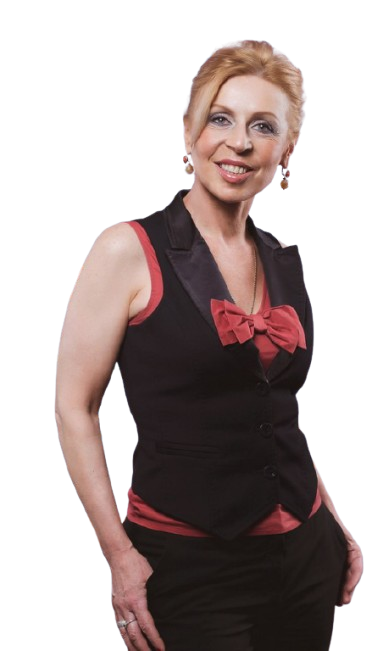

Настоящий голос никуда не девается. Он просто ждёт, пока ему разрешат звучать в полную силу. Здесь мы это разрешение возвращаем.

Он садится не просто так. За зажатым, тихим, «не своим» звучанием почти всегда стоит что-то, что человек долго носит в себе.
Внутри звучу гораздо смелее, чем то, что выходит наружу.
На важном моменте горло будто перехватывает, и голос садится.
Пою чисто, а всё равно как не своим голосом.
Хочу звучать полнее и мягче, а не вполголоса, как привыкла.
Повод у каждого свой. Выберите то, что откликается, — с остального можно начать позже.
Когда напряжение копится в теле, а горло сжимается в самый нужный момент. Через дыхание и звук возвращаем голосу опору.
Для тех, кто говорит с аудиторией. Убираем дрожь и зажим, находим звучание, которое не выдаёт волнение.
Голос как способ восстановиться и расслабиться. Через тянущийся звук и вибрацию тело отпускает напряжение, а голос возвращается к своей естественной опоре.
Для женщин, которые хотят звучать мягче, полнее, свободнее. Разрешаем голосу быть собой.
Восстановление звучания после долгой паузы, декрета или болезни. Мягко возвращаем голосу привычку звучать.
Индивидуальная встреча, 60 минут. Онлайн или очно в Великом Новгороде.
За годы работы я перестала «ставить голоса». Оказалось, чаще нужно другое: помочь голосу перестать защищаться и зазвучать свободно.
Профессиональный вокалист и педагог. Работаю с голосом и состоянием у взрослых — от снятия зажимов до возвращения живого, свободного звучания. Веду индивидуально и в малых группах, онлайн и очно.
Моя работа стоит на вокальной школе, а не на общих словах о звуке. Поэтому здесь спокойно: я слышу, где голос зажат, и знаю, как его отпустить.
Занятия — это работа с голосом, телом и вниманием к себе. Они не заменяют психолога и не являются психотерапией. Если всплывает то, что требует более глубокой поддержки, я скажу об этом честно и помогу понять, куда обратиться дальше.
Напишите пару слов о том, что сейчас с вашим голосом и чего хочется. Дальше решим вместе.
Написать Елене в Telegram